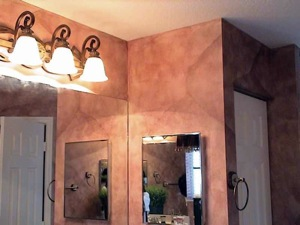

I ran across your website and will definitely be purchasing your tool kit w/ the poofy pads.
But I found your site searching for HELP on colors. I have my own faux finishing company but must admit (as odd as it may seem) I suck at BLENDING 2 glazes together to come up with a desired color.
Could you be so kind as to help me with the base coat and glazes to come up with a burnt sienna LOOK with a gold undertone. When I base coated with a GOLD and then burnt sienna glaze it looked harsh not soft. Is there another color (maybe cream) that will soften it. I've done so many sample boards and frankly I'm just burnt out on this particular job/client that my creative juices are NOT flowing. I'm STUCK.
You had stated on the poofy kit video that you chose a golden brown with burnt umber. While the color looked like the mexican red tile color I'm trying to see how golden brown and burnt umber would create the red look.
Anyways ANY help you could send my way would be greatly appreciated. I have to come up with the colors by Sunday is why this is so important.
Thanks soooo much, Tricia
Hey Tricia,
I am happy to help if I can. Colors are tricky. As for the video, you must be referring to the Old World Parchment, right? I did use the golden brown and burnt umber for the golden wall but for the Burgundy wall, I used a mixture of burnt sienna, berry wine and burnt umber. I used that mixture and a mixture of dark green with black for the second color. Not having your glaze tints in front of me is hard to help you further.
I can only guide you with the Sherwin Williams colors I have used, even though I use acrylic most of the time to tint my glaze. In fact, I don't use a glaze but use Floetrol instead. So I can suggest something but not sure if it will work.
What do you mean by gold basecoat? A yellow gold or metallic gold?
If you use a color called Latte 6108 or Nomadic Desert 6107 as a base coat and then use burnt sienna and Raw Sienna mixed with burnt umber (more raw sienna and just a little burnt umber) as a color wash on top, you should get what you are looking for. 6108 will give you the darker faux finish and 6107 will be slightly lighter. If you can go to Sherwin Williams, you can buy a quart of the Colors to Go for $6 and try them out.
With the palette I sell, you can blend both glaze colors at the same time but I don't know how you faux paint. If you have to apply one at a time, do the burnt sienna first and then come back with the other golden mixture on top in just some areas.
Let me know how it goes. I would send you a sample board that I just played with but you have no time. I would send a picture but your browser might change the way it looks in person. Will pray for you.
God bless, Sandy Silva
Hello Sandy,
I am soooo GRATEFUL for your help!
Yes I was referring to the parchment video color.
After speaking with my client today she told me to not stress and let's just of course get it right. So I have a little more time than I originally thought. YEAH!!!
If I scanned a picture in the book that she found that she likes could you look at it and tell me what you think I should mix? (I can get the book from her tom/Sat). If that doesn't work then I will go to SWilliams and get the quarts in the colors you suggested. I just want to at least TRY to get exactly what she wants.
You are sooooo kind to take the time to help me. Most people would not go out of their way to go into such details.
May God BLESS you!!!! Tricia
Dear Tricia,
I hope client isn't affected by the knockdown texture because the faux finish does tend to look different on a smooth wall.
I really believe the colors I mentioned to you will work. You can even use an off white color for the base coat if she already has that on her wall, as long as it is in satin or eggshell. To get a dark finish you can just give it another coat. If you prefer to paint a base coat, then go with a dark off white color or light tan.
The mixture of tints I mentioned are what you need. I would apply the gold along with the burnt sienna mix but again, with the system I sell, you can do that. If you apply glaze with a brush, then try them at the same time, blending one color into the next or try doing the burnt sienna first and then when dry, add the golden mix on top.
This color is just about exactly what I have in this wall. Just adding the gold on top should give you what she is looking for. Hope this helps.
God bless, Sandy Silva

Hey Sandy,
Tricia here....the lady that needed your help. IT WORKED GREAT! Her exact words were I LOVE IT!
What I did was apply the Latte as my base ( I had already hand troweled a plaster) then mixed up the Raw Sienna w/ a little burnt umber, then the burnt sienna by itself (premixed) then a third color with burnt sienna and burnt umber. I applied the gold first, then the straight burnt sienna, then sporadically the toned down burnt sienna. It left if with reddish tints here and there then a softer (brownish red) in others.
THANK YOU SOOOOO MUCH FOR YOUR HELP!!! I have just overextended myself with my business and I was COMPLETELY brain dead, no creative juices left, to come up with anything. Of course after all was said and done I was feeling pretty ignorant that I couldn't figure it out.
May God Bless You IMMENSELY, Tricia

(This kit includes Basic, Faux Marble, Faux Wood Kit and tools for texturing)
*FREE Priority Shipping and Color Idea E-book